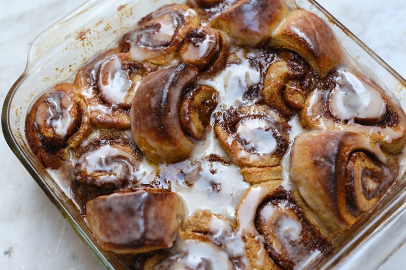

Description
These outrageously rich and indulgent chocolate sweet rolls come together with a buttery soft fresh homemade dough and brown sugar chocolate filling. They’re shaped like cinnamon rolls, but taste like flaky chocolate babka. Drizzle the warm rolls with espresso glaze or choose another topping from the suggestions below.
These make an extra special Christmas, Mother’s Day, Easter, or Father’s Day brunch!
Ingredients
- 1 cup (240ml) whole milk
- 6 Tablespoons (75g) granulated sugar
- 1 Tablespoon (9g) active dry or instant yeast
- 5 Tablespoons (72g) unsalted butter
- 2 large eggs
- 1 teaspoon salt
- 4 cups (530g) bread flour
Steps
- Prepare the dough: Whisk the warm milk, 2 Tablespoons sugar, and the yeast together in the bowl of your stand mixer fitted with a dough hook or paddle attachment. Cover and allow mixture to sit for about 5 minutes or until foamy on top.
- Add the remaining sugar, the butter, eggs, salt, and 1 cup (about 130g) of flour and beat on medium speed for 1 minute. Scrape down the sides of the bowl with a rubber spatula. Add 3 cups (about 400g) flour, switch the mixer down to low speed, and beat until a soft dough forms and pulls away from the sides of the bowl. Dough will be very soft, but not overly sticky. Beat in 2-3 more Tablespoons of flour if dough seems very sticky. Avoid adding more flour than you need.
- Knead the dough: Keep the dough in the mixer and beat on low speed for an additional 3 minutes or knead by hand on a lightly floured surface for 3 minutes.
- 1st Rise: Lightly grease a large bowl with oil or use nonstick spray. Place the dough in the bowl, turning it to coat all sides in the oil. Cover the bowl with aluminum foil, plastic wrap, or a clean kitchen towel. Allow the dough to rise in a relatively warm environment for 2 hours or until double in size.
- Grease the bottom and sides of a metal or glass 9×13 inch baking dish or line with parchment paper.
- Roll out the dough: Punch down the dough to release the air. Place dough on a lightly floured work surface and using a lightly floured rolling pin, roll dough into a 10×16 inch rectangle. Make sure the dough is smooth and evenly thick. If the dough keeps shrinking as you roll it out, stop what you’re doing, cover it lightly, and let it rest for 10 minutes to relax the gluten. When you return to the dough, it should stretch out much easier.
- For the filling: Mix all of the filling ingredients together except for the chopped chocolate/chocolate chips. The softer the butter is, the easier it is to mix. (Microwave it for a few seconds to soften if needed.) Spread mixture all over the dough. Sprinkle chopped chocolate/chocolate chips evenly on top. Tightly roll up the dough to form a 16-inch-long log. If some filling spills out, sprinkle it on top of the roll. With an extra sharp knife, cut into 12 even rolls, between 1-1.5 inches each. Arrange in the prepared baking pan.
- 2nd Rise: Cover the rolls tightly and allow to rise until doubled in size, about 1 hour.
- Preheat the oven to 350°F (177°C). Bake rolls for about 25-28 minutes or until they are lightly browned on top. After about 15 minutes, tent a piece of aluminum foil over the top of the pan to prevent the tops from browning too quickly and baking unevenly. Remove pan from the oven and place pan on a wire rack for about 10 minutes as you make the icing.